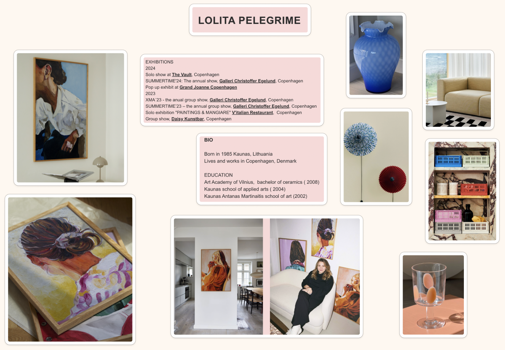
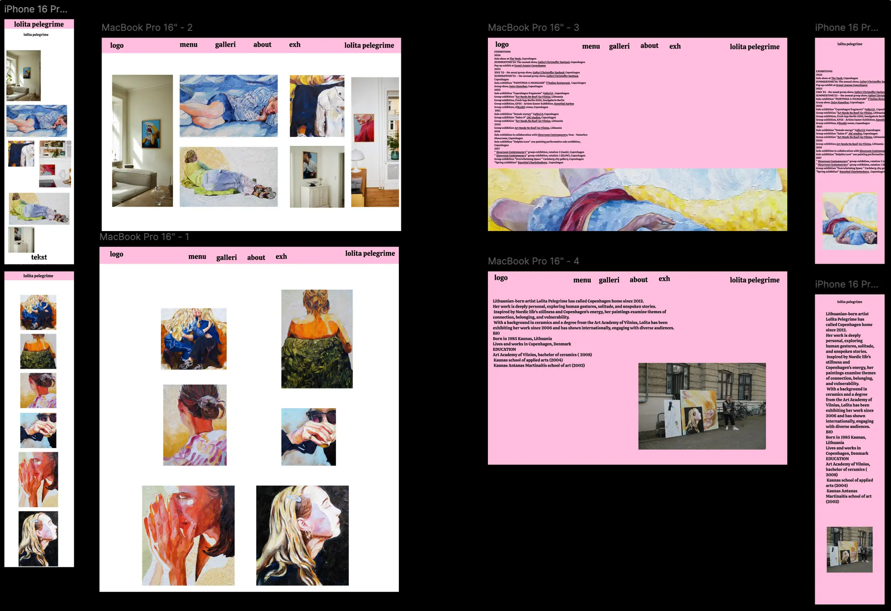
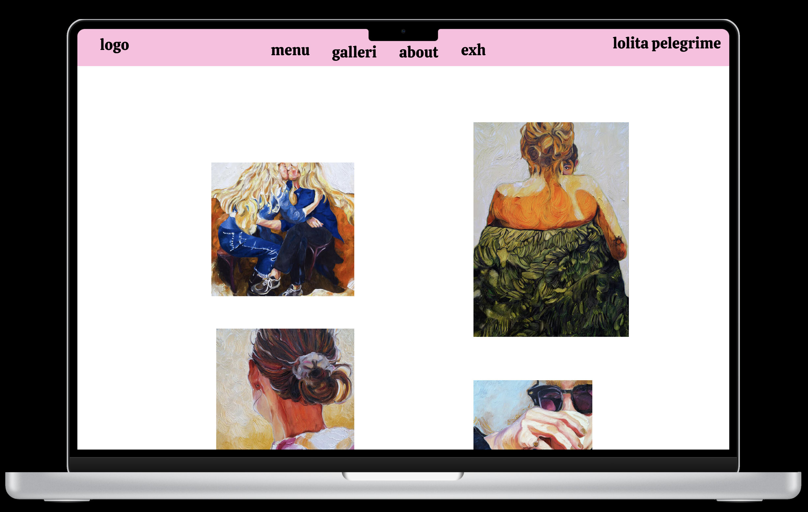
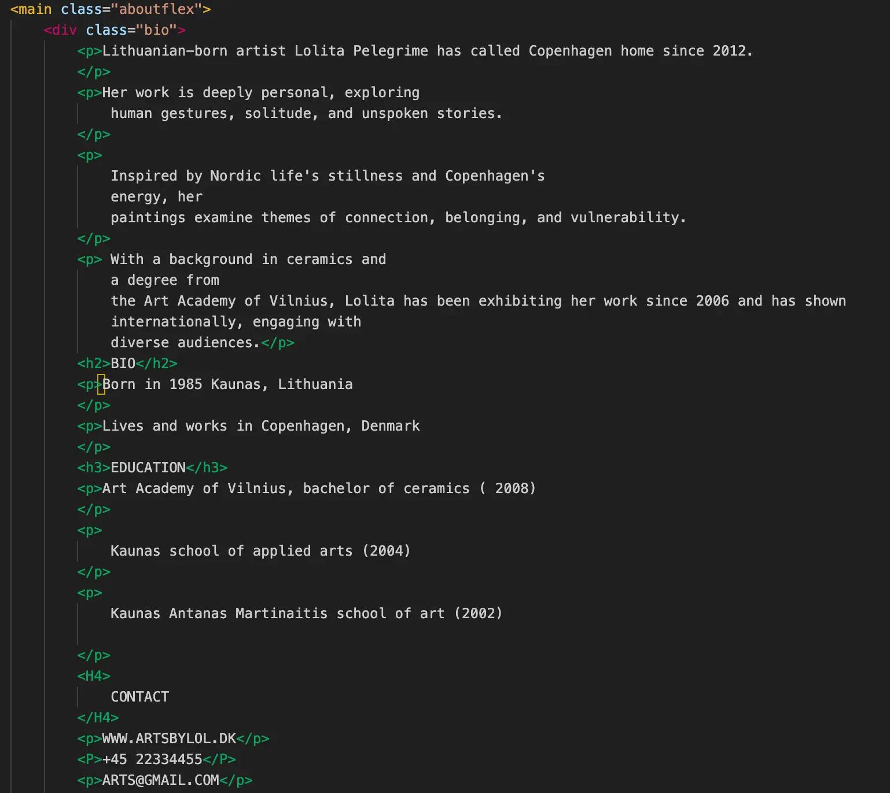

UX / UI.
Styletile.
Jeg har påbegyndt mit websiteprojekt med et styletile for at skabe en klar visuel retning og sikre en sammenhængende stil gennem hele designet. Styletilen fungerer som et kreativt fundament, hvor jeg har defineret farver, typografi, logo og visuelle elementer. Det hjælper mig med at træffe designbeslutninger tidligt i processen og holde fokus på stemning, målgruppe og æstetik, inden jeg går videre til wireframes og kodning.
Hifi wireframes.
Wireframes er en vigtig del af den tidlige designproces, hvor man planlægger strukturen og opbygningen af et website uden at fokusere på farver eller grafik. De fungerer som en slags skelet af siden og viser, hvor elementer som tekst, billeder, knapper og navigation skal placeres. Formålet med wireframes er at skabe overblik og sikre en god brugeroplevelse, inden man begynder at designe det visuelle layout.
Klikbar prototype.
En klikbar prototype er en interaktiv model af et website eller en app, som gør det muligt at teste navigation og brugeroplevelse, før noget bliver kodet. Den viser, hvordan sider hænger sammen, og hvordan brugeren bevæger sig rundt. En prototype er et effektivt værktøj til at få feedback tidligt i processen og justere design og funktionalitet, inden det implementeres for alvor.
Kodning af site.
Kodning af et website handler om at omsætte designet til en fungerende hjemmeside ved hjælp af HTML og CSS. HTML bruges til at strukturere indhold som tekst, billeder og links, mens CSS styrer det visuelle udtryk – f.eks. farver, skrifttyper og layout. Gennem kodningen bliver designet gjort levende og tilpasset forskellige skærmstørrelser og enheder.
